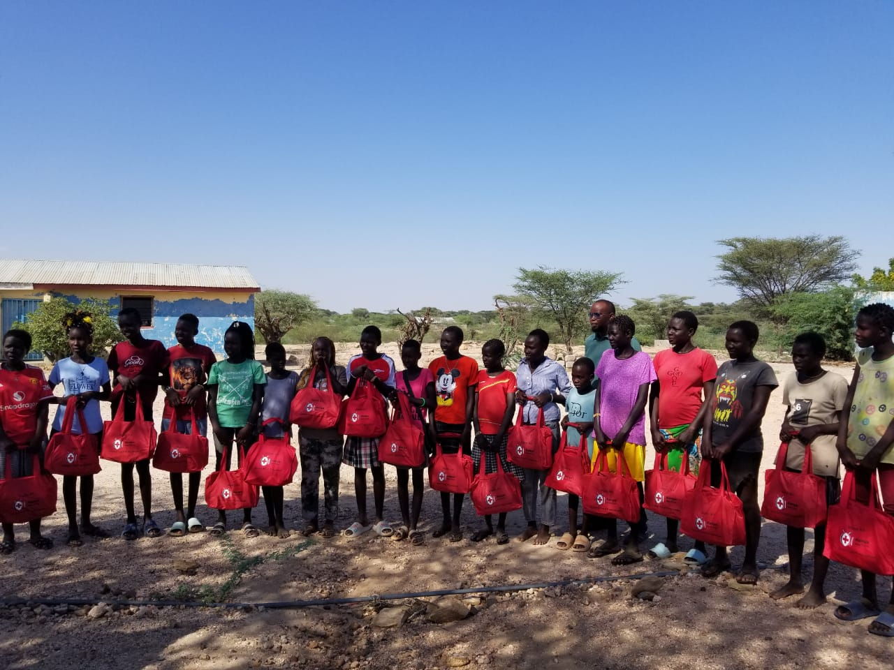

Snapshots of Our Programs



APESE ERE is committed to uplifting youth and adolescent girls in Turkana through education, mentorship, and community support.
3-Year Budget
Youth Empowered
Active Sub-Counties
Community outreach, health talks and PMTCT awareness.
Guidance for in-school and out-of-school youth in Turkana.
Training youth in online freelancing and digital work skills.
APESE ERE Youth Empowerment Organization is grassroots, women-led NGO founded in January 2016 and formally registered on 17th November 2017 under the Ministry of Labour and Social Protection in Kenya. Based in Turkana County, our name “Apese Ere” means “Indigenous Girls” in the Turkana language a symbol of our deep commitment to empowering vulnerable adolescent girls and youth in marginalized communities.
• Headquarters: Turkana Central • Active Reach: Turkana Central and Loima Sub-counties • Expansion Capacity: Turkana West, Lokichoggio, Turkana North, Turkana East, and Turkana South

Dr. Francis Ngikito
FOUNDER AND C.E.O
We prioritize environmental education, promote sustainable practices, and raise awareness about the importance of preserving Earth's ecosystems. In Turkana, where communities rely heavily on natural resources for livestock herding and daily sustenance, we work closely with pastoralists, women’s groups, and youth to address environmental degradation and build resilience to climate change. Through tree planting, soil conservation, and water harvesting projects, we promote indigenous ecological practices that align with local livelihoods. We also integrate climate education into schools and community forums, encouraging collective action to protect the fragile Turkana ecosystem, which is increasingly threatened by drought, desertification, and overgrazing.
APESE ERE works in Turkana Central, Loima, and is expanding to other sub-counties in Turkana. We engage with diverse stakeholders and marginalized communities to implement scalable and sustainable youth programs. In a region where youth often face barriers such as limited access to formal education, unemployment, and early marriage, our programs focus on equipping them with life skills, leadership training, and opportunities for economic empowerment. We collaborate with elders, schools, and local authorities to ensure cultural sensitivity and community acceptance. By integrating local knowledge and traditions, we create youth-friendly spaces where innovation and indigenous wisdom go hand in hand. Our goal is to raise a generation of confident, informed, and self-reliant young leaders who can shape the future of Turkana.
Founder and Board Chair
Co_Founder and Board Treasurer

project Co ordinator
M S E Officer
Finance Officer
Field Officer